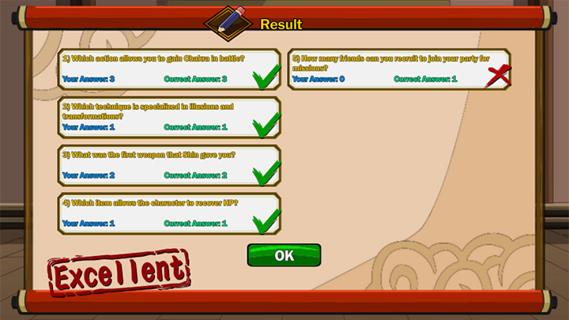
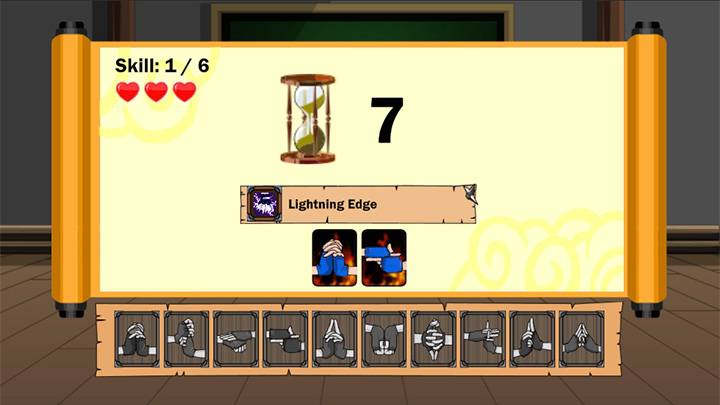
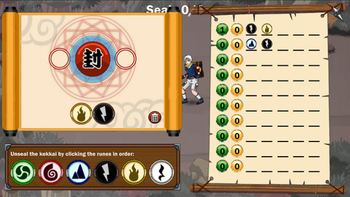

Unity Developer | Multiplayer | AR & VR
Ninja Sage is a private server of Ninja Saga that has been extensively customized to enhance the gaming experience for players. I have been actively contributing to the development of a remake of Ninja Sage using the Unity engine, which allows for improved graphics, mechanics, and overall gameplay.
Currently, my focus is on implementing the exam features, which are crucial for player progression within the game. Some of the exam features I have worked on include the Free Roam System, Writing Exam, Hand Seal Exam, and Kekkai Exam.
The Free Roam System enables players to freely explore the game world using a point-and-click interface. This feature allows for greater immersion and interaction with the environment, giving players the freedom to navigate through different areas of the map at their own pace.
The Writing Exam consists of multiple-choice questions that test players’ knowledge of various aspects of the game, from lore to gameplay mechanics. This feature encourages players to engage more deeply with the game's content and understand the world of ninjas.
The Hand Seal Exam challenges players to memorize specific hand seal patterns, which are essential for executing powerful jutsu. This feature adds a layer of skill-based gameplay, as players must pay close attention to the patterns and replicate them accurately.
Lastly, the Kekkai Exam requires players to guess the correct combination of elements to unlock a kekkai seal. This exam encourages strategic thinking and reinforces the elemental system within the game, making it an exciting and engaging challenge for players.
